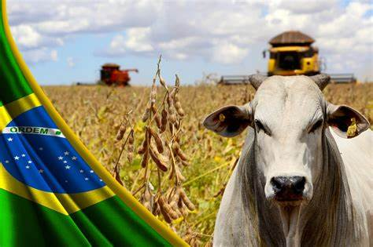

Tocado pelo agro
O agronegócio brasileiro é um dos mais importantes do mundo, sendo o Brasil um grande produtor e exportador de diversos produtos. Produção e exportação Em 2023, o agronegócio brasileiro teve um superávit de US$ 148,58 bilhões O Brasil é o maior produtor mundial de soja em grãos, café, suco de laranja e açúcar O Brasil é o maior exportador de açúcar, café, suco de laranja, soja em grãos O Brasil é o segundo maior exportador de carnes bovina e de frango Novos mercados Entre 2019 e 2021, o Brasil abriu mais de 150 novos mercados para seus produtos agropecuários Em 2021, mais de 69 novos mercados passaram a comprar produtos do agro brasileiro Plataforma Agro Brasil + Sustentável Esta plataforma disponibiliza informações sobre governança ambiental, social e corporativa O objetivo é qualificar os produtos agropecuários brasileiros Projeto Marca Agro do Brasil O objetivo é unir a cadeia produtiva e organizar o pensamento e o planejamento estratégico do setor O objetivo é destacar o quanto o setor evoluiu nas últimas décadas Algumas das maiores empresas do agro brasileiro: SLC Agrícola, Bom Futuro, Amaggi, Grupo Bom Jesus, Scheffer.AGRO MATA A FOME
